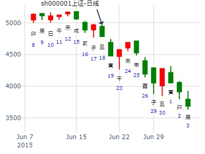

占事：元月24-28日大盘涨跌？
公历时间：2011年1月21日15时35分 星期五
干支：庚寅年 己丑月 丙子日 丙申时 (旬空：申酉)
离宫：山水蒙
六神 伏 神 【本 卦】
青龙 ▅▅▅▅▅ 父母丙寅木
玄武 ▅▅ ▅▅ 官鬼丙子水
白虎 妻财己酉金 ▅▅ ▅▅ 子孙丙戌土 世
螣蛇 ▅▅ ▅▅ 兄弟戊午火
勾陈 ▅▅▅▅▅ 子孙戊辰土
朱雀 ▅▅ ▅▅ 父母戊寅木 应
子日午日为何都是涨？卯日没有冲酉，反而合飞神？
风生水起 占事：大盘到下周末
公历时间：2016年1月27日15时13分
干 支：乙未年 己丑月 戊申日 庚申时
旬 空：辰巳 午未 寅卯 子丑
离宫：山水蒙
六神 伏 神 【本 卦】
朱雀 ▄▄▄▄▄ 父母丙寅木
青龙 ▄▄ ▄▄ 官鬼丙子水
玄武 妻财己酉金 ▄▄ ▄▄ 子孙丙戌土 世
白虎 ▄▄ ▄▄ 兄弟戊午火
螣蛇 ▄▄▄▄▄ 子孙戊辰土
勾陈 ▄▄ ▄▄ 父母戊寅木 应
主帖标题: 关注一2328198本周涨跌
手摇卦 公历时间：2020年1月13日7时27分
农历时间：己亥年 十二月十九日辰时
干 支：己亥年 丁丑月 乙卯日 庚辰时
旬 空：辰巳 申酉 子丑 申酉
离宫：山水蒙
六神 伏 神 【本 卦】
玄武 ▄▄▄▄▄ 父母丙寅木
白虎 ▄▄ ▄▄ 官鬼丙子水
螣蛇 妻财己酉金 ▄▄ ▄▄ 子孙丙戌土 世
勾陈 ▄▄ ▄▄ 兄弟戊午火
朱雀 ▄▄▄▄▄ 子孙戊辰土
青龙 ▄▄ ▄▄ 父母戊寅木 应
注：张三汉补码，猜000829，仅供参考，不一定猜对。
山水蒙静卦，上证未来2周。 --手摇卦
时间: 2022-01-08 8时04分
干支: 辛丑年辛丑月辛酉日 (旬空: 子丑 )
蒙静卦
腾蛇 ▅▅▅▅▅ 父母寅木
勾陈 ▅▅ ▅▅ 官鬼子水
朱雀 妻财酉金▅▅ ▅▅ 子孙戌土 世
青龙 ▅▅ ▅▅ 兄弟午火
玄武 ▅▅▅▅▅ 子孙辰土
白虎 ▅▅ ▅▅ 父母寅木 应
山水蒙静卦，上证2周。2022-01-08
蒙卦，财不上卦伏藏，即使丑月酉日居然也是跌。
公历起卦时间：2020年2月15日20时8分 (电脑自动)
干支：庚子年 戊寅月 戊子日 壬戌时 （日空：午未）
离宫：山水蒙 离宫：山水蒙
六神 伏神 本 卦 变 卦
朱雀 父母丙寅木 ▅▅▅▅▅ 父母丙寅木 ▅▅▅▅▅
青龙 官鬼丙子水 ▅▅ ▅▅ 官鬼丙子水 ▅▅ ▅▅
玄武 妻财己酉金 子孙丙戌土 ▅▅ ▅▅ 世 子孙丙戌土 ▅▅ ▅▅ 世
白虎 兄弟戊午火 ▅▅ ▅▅ 兄弟戊午火 ▅▅ ▅▅
螣蛇 子孙戊辰土 ▅▅▅▅▅ 子孙戊辰土 ▅▅▅▅▅
勾陈 父母戊寅木 ▅▅ ▅▅ 应 父母戊寅木 ▅▅ ▅▅ 应
600188兖州煤业明天到下周末走势如何？2月24日-3月5日
2022年2月23日22时25分 (在线摇卦) 晖
干支：壬寅年 壬寅月 丁未日 辛亥时 （日空：寅卯）
离宫：山水蒙 离宫：山水蒙
六神 伏神 本 卦 变 卦
青龙 父母丙寅木 ▅▅▅▅▅ 父母丙寅木 ▅▅▅▅▅
玄武 官鬼丙子水 ▅▅ ▅▅ 官鬼丙子水 ▅▅ ▅▅
白虎 妻财己酉金 子孙丙戌土 ▅▅ ▅▅ 世 子孙丙戌土 ▅▅ ▅▅ 世
螣蛇 兄弟戊午火 ▅▅ ▅▅ 兄弟戊午火 ▅▅ ▅▅
勾陈 子孙戊辰土 ▅▅▅▅▅ 子孙戊辰土 ▅▅▅▅▅
朱雀 父母戊寅木 ▅▅ ▅▅ 应 父母戊寅木 ▅▅ ▅▅ 应
主帖标题: 00238 0213
男 占事：没填
公历起卦时间：2023年2月12日17时29分 (在线摇卦)
干支：癸卯年 甲寅月 辛丑日 丁酉时 （日空：辰巳）
离宫：山水蒙 离宫：山水蒙
六神 伏神 本 卦 变 卦
螣蛇 父母丙寅木 ▅▅▅▅▅ 父母丙寅木 ▅▅▅▅▅
勾陈 官鬼丙子水 ▅▅ ▅▅ 官鬼丙子水 ▅▅ ▅▅
朱雀 妻财己酉金 子孙丙戌土 ▅▅ ▅▅ 世 子孙丙戌土 ▅▅ ▅▅ 世
青龙 兄弟戊午火 ▅▅ ▅▅ 兄弟戊午火 ▅▅ ▅▅
玄武 子孙戊辰土 ▅▅▅▅▅ 子孙戊辰土 ▅▅▅▅▅
白虎 父母戊寅木 ▅▅ ▅▅ 应 父母戊寅木 ▅▅ ▅▅ 应
男 占事：30100
公历起卦时间：2023年2月12日17时31分 (在线摇卦)
干支：癸卯年 甲寅月 辛丑日 丁酉时 （日空：辰巳）
离宫：风水涣 坎宫：坎为水 (六冲)
六神 伏神 本 卦 变 卦
螣蛇 父母辛卯木 ▅▅▅▅▅ ○→ 官鬼戊子水 ▅▅ ▅▅ 世
勾陈 兄弟辛巳火 ▅▅▅▅▅ 世 子孙戊戌土 ▅▅▅▅▅
朱雀 妻财己酉金 子孙辛未土 ▅▅ ▅▅ 妻财戊申金 ▅▅ ▅▅
青龙 官鬼己亥水 兄弟戊午火 ▅▅ ▅▅ 兄弟戊午火 ▅▅ ▅▅ 应
玄武 子孙戊辰土 ▅▅▅▅▅ 应 子孙戊辰土 ▅▅▅▅▅
白虎 父母戊寅木 ▅▅ ▅▅ 父母戊寅木 ▅▅ ▅▅
此贴股票不详，暂不配图。
主题：2013年3月19日的黄金行情走势（目前点位1608）
癸巳 乙卯 癸未 癸亥(日空:申酉 时空:子丑)
癸巳年二月初七(2013/03/18 21:24:12)
山水蒙
白虎 父母寅木 ／
腾蛇 官鬼子水 ∥
妻财酉金：勾陈 子孙戌土 ∥ 离
朱雀 兄弟午火 ∥
青龙 子孙辰土 ／
玄武 父母寅木 ∥ 应

酉日为短线高点。
主帖标题: 3月8至3月12日大盘（周测）
公历时间：2021年3月5日15时29分
干 支：辛丑年 庚寅月 壬子日 戊申时
旬 空：辰巳 午未 寅卯 寅卯
离宫：山水蒙
六神 伏 神 【本 卦】
白虎 ▄▄▄▄▄ 父母丙寅木
螣蛇 ▄▄ ▄▄ 官鬼丙子水
勾陈 妻财己酉金 ▄▄ ▄▄ 子孙丙戌土 世
朱雀 ▄▄ ▄▄ 兄弟戊午火
青龙 ▄▄▄▄▄ 子孙戊辰土
玄武 ▄▄ ▄▄ 父母戊寅木 应
占问：4月20日周五大盘“做空”可以胜出吗？起卦方式：手动摇卦
公历时间：2007年4月20日8时50分 星期五
干支：丁亥年 甲辰月 甲申日 戊辰时 (旬空：午未)
蒙静卦
玄武 ▅▅▅▅▅ 父母寅木
白虎 ▅▅ ▅▅ 官鬼子水
腾蛇 妻财酉金▅▅ ▅▅ 子孙戌土 世
勾陈 ▅▅ ▅▅ 兄弟午火
朱雀 ▅▅▅▅▅ 子孙辰土
青龙 ▅▅ ▅▅ 父母寅木 应
主帖标题: 上海大盘走势（上证指数）每日预测
以下是引用麦华盛在2007-4-20 8:52:00的发言：
今天早上天朗气清，心静平静。以前都是选用收市后或晚上摇第二天的卦，总是精神不够，心情杂乱，为起卦的忌。现在清早起来，一切生机勃勃，最适合摇卦。
神马股份 庚子年4.15戊子星期三-4.24丁酉哪日顶？
公历起卦时间：2020年4月20日9时23分 (电脑自动)
干支：庚子年 庚辰月 癸巳日 丁巳时 （日空：午未）
离宫：山水蒙 离宫：山水蒙
六神 伏神 本 卦 变 卦
白虎 父母丙寅木 ▅▅▅▅▅ 父母丙寅木 ▅▅▅▅▅
螣蛇 官鬼丙子水 ▅▅ ▅▅ 官鬼丙子水 ▅▅ ▅▅
勾陈 妻财己酉金 子孙丙戌土 ▅▅ ▅▅ 世 子孙丙戌土 ▅▅ ▅▅ 世
朱雀 兄弟戊午火 ▅▅ ▅▅ 兄弟戊午火 ▅▅ ▅▅
青龙 子孙戊辰土 ▅▅▅▅▅ 子孙戊辰土 ▅▅▅▅▅
玄武 父母戊寅木 ▅▅ ▅▅ 应 父母戊寅木 ▅▅ ▅▅ 应
主帖标题: 本周上证指数资金面变坏冲高回落，小阳线报收，下周如何演变
龙神三个点出了进了这个新股不知道明天怎样
占事：603113金能科技下午跟明天涨跌
排卦：元亨利贞网六爻在线排盘系统 http://www.china95.net
公历起卦时间：2017年5月23日12时21分 (电脑自动)
干支: 丁酉年乙巳月庚戌日 (旬空: 寅卯 )
蒙静卦
腾蛇 ▅▅▅▅▅ 父母寅木
勾陈 ▅▅ ▅▅ 官鬼子水
朱雀 妻财酉金▅▅ ▅▅ 子孙戌土 世
青龙 ▅▅ ▅▅ 兄弟午火
玄武 ▅▅▅▅▅ 子孙辰土
白虎 ▅▅ ▅▅ 父母寅木 应
主帖标题: 今天起卦看了下麦站的三个股
占事：000058深赛格下周涨跌
公历起卦时间：2015年6月5日16时32分 (电脑自动)
干支：乙未年 辛巳月 壬子日 戊申时 （日空：寅卯）
离宫：山水蒙 离宫：山水蒙
六神 伏神 本 卦 变 卦
白虎 父母丙寅木 ▅▅▅▅▅ 父母丙寅木 ▅▅▅▅▅
腾蛇 官鬼丙子水 ▅▅ ▅▅ 官鬼丙子水 ▅▅ ▅▅
勾陈 妻财己酉金 子孙丙戌土 ▅▅ ▅▅ 世 子孙丙戌土 ▅▅ ▅▅ 世
朱雀 兄弟戊午火 ▅▅ ▅▅ 兄弟戊午火 ▅▅ ▅▅
青龙 子孙戊辰土 ▅▅▅▅▅ 子孙戊辰土 ▅▅▅▅▅
玄武 父母戊寅木 ▅▅ ▅▅ 应 父母戊寅木 ▅▅ ▅▅ 应
蒙卦戌易涨，辰易跌。对冲关系。
有种说法，财爻伏藏，子孙持世，兄弟发动涨。--张三汉的说法，不一定支持。
主帖标题: 手摇铜钱预测6.18日下午大盘走势
求测人：某人，男，癸亥，手工指定(起卦方式)
占问事宜：6.18日下午大盘走势
公历：2015年6月18日12时38分，星期四。
干支：乙未年 壬午月 乙丑日 壬午时 (卦身：卯)
主变卦 山水蒙(离宫) [空亡:戌、亥]
玄武 ▅▅▅▅▅ 父母丙寅木
白虎 ▅▅ ▅▅ 官鬼丙子水
螣蛇 妻财己酉金 ▅▅ ▅▅ 子孙丙戌土 世
勾陈 ▅▅ ▅▅ 兄弟戊午火
朱雀 ▅▅▅▅▅ 子孙戊辰土
青龙 ▅▅ ▅▅ 父母戊寅木 应

阿飞占事：中国汽研601965近二周走势？ 起卦方式：手动摇卦
公历时间：2014年7月1日14时6分
干 支：甲午年 庚午月 癸酉日 己未时
旬 空：辰巳 戌亥 (戌亥) 子丑
离宫：山水蒙
六神 伏 神 【本 卦】
白虎 ▄▄▄▄▄ 父母丙寅木
螣蛇 ▄▄ ▄▄ 官鬼丙子水
勾陈 妻财己酉金 ▄▄ ▄▄ 子孙丙戌土 世
朱雀 ▄▄ ▄▄ 兄弟戊午火
青龙 ▄▄▄▄▄ 子孙戊辰土
玄武 ▄▄ ▄▄ 父母戊寅木 应
涨涨就跌。原本是空下伏神，易涨。
但第二三天就出空了，反而把伏神压住，又涨不动，跌了。
原来空下伏神，戌日出空，但同时又冲起二爻子孙辰土，涨。
子日冲兄弟午火暗动，大跌。卯日冲酉日出空，涨。
辰冲戌土，震荡。
马后炮：蒙卦总结，戌日易涨。
600655豫园3个月 --静坐打卦- 王
起卦时间:2015年7月23日9时51分
干支: 乙未年癸未月庚子日 (旬空: 辰巳 )
蒙静卦
腾蛇 ▅▅▅▅▅ 父母寅木
勾陈 ▅▅ ▅▅ 官鬼子水
朱雀 妻财酉金▅▅ ▅▅ 子孙戌土 世
青龙 ▅▅ ▅▅ 兄弟午火
玄武 ▅▅▅▅▅ 子孙辰土
白虎 ▅▅ ▅▅ 父母寅木 应
蒙卦震荡不断，唯有世爻戌月稳定涨了。

测002797第一创业在2016年7月--9月走势
公历起卦时间：2016年7月17日10时50分 (手工指定)
干支：丙申年 乙未月 庚子日 辛巳时 （日空：辰巳）
离宫：山水蒙 离宫：山水蒙
六神 伏神 本 卦 变 卦
腾蛇 父母丙寅木 ▅▅▅▅▅ 父母丙寅木 ▅▅▅▅▅
勾陈 官鬼丙子水 ▅▅ ▅▅ 官鬼丙子水 ▅▅ ▅▅
朱雀 妻财己酉金 子孙丙戌土 ▅▅ ▅▅ 世 子孙丙戌土 ▅▅ ▅▅ 世
青龙 兄弟戊午火 ▅▅ ▅▅ 兄弟戊午火 ▅▅ ▅▅
玄武 子孙戊辰土 ▅▅▅▅▅ 子孙戊辰土 ▅▅▅▅▅
白虎 父母戊寅木 ▅▅ ▅▅ 应 父母戊寅木 ▅▅ ▅▅ 应
风生水起 占事：002454 申月
公历时间：2015年8月6日13时51分
干 支：乙未年 癸未月 甲寅日 辛未时
旬 空：辰巳 申酉 (子丑) 戌亥
离宫：山水蒙
六神 伏 神 【本 卦】
玄武 ▄▄▄▄▄ 父母丙寅木
白虎 ▄▄ ▄▄ 官鬼丙子水
螣蛇 妻财己酉金 ▄▄ ▄▄ 子孙丙戌土 世
勾陈 ▄▄ ▄▄ 兄弟戊午火
朱雀 ▄▄▄▄▄ 子孙戊辰土
青龙 ▄▄ ▄▄ 父母戊寅木 应
测000558莱茵体育在2015年8月24日-8月28日走势
出生：1979 年 性别：男
公历起卦时间：2015年8月23日10时49分 (手工指定)
干支：乙未年 甲申月 辛未日 癸巳时 （日空：戌亥）
离宫：山水蒙 离宫：山水蒙
六神 伏神 本 卦 变 卦
腾蛇 父母丙寅木 ▅▅▅▅▅ 父母丙寅木 ▅▅▅▅▅
勾陈 官鬼丙子水 ▅▅ ▅▅ 官鬼丙子水 ▅▅ ▅▅
朱雀 妻财己酉金 子孙丙戌土 ▅▅ ▅▅ 世 子孙丙戌土 ▅▅ ▅▅ 世
青龙 兄弟戊午火 ▅▅ ▅▅ 兄弟戊午火 ▅▅ ▅▅
玄武 子孙戊辰土 ▅▅▅▅▅ 子孙戊辰土 ▅▅▅▅▅
白虎 父母戊寅木 ▅▅ ▅▅ 应 父母戊寅木 ▅▅ ▅▅ 应
世爻空，申酉值班也是跌？为何？
主帖标题: 第八期上证指数比赛９月８日到１２日
公历时间：2008年9月8日9时30分 星期一
农历时间：戊子年八月初九巳时
干支：戊子年 辛酉月 辛亥日 癸巳时 (旬空：寅卯)
神煞：驿马—巳 桃花—子 日禄—酉 贵人—寅，午
离宫：山水蒙
六神 伏 神 【本 卦】
螣蛇 ▅▅▅▅▅ 父母丙寅木
勾陈 ▅▅ ▅▅ 官鬼丙子水
朱雀 妻财己酉金 ▅▅ ▅▅ 子孙丙戌土 世
青龙 ▅▅ ▅▅ 兄弟戊午火
玄武 ▅▅▅▅▅ 子孙戊辰土
白虎 ▅▅ ▅▅ 父母戊寅木 应
这是大盘日Ｋ线演化的信息．
数理卦，仅供娱乐
姓名：无 性别:男 生年：无 经度：120度0分
上证指数9月26日～～9月30日的走势如何呢？
起卦方式：手工指定
公历：2022年09月24日10时01分
四柱：壬寅年 己酉月 庚辰日 辛巳时 (日空：申酉)
卦名：离宫 4世卦：山水蒙
螣蛇 ▅▅▅ 父母丙寅木
勾陈 ▅ ▅ 官鬼丙子水
朱雀 妻财己酉金 ▅ ▅ 子孙丙戌土 世
青龙 ▅ ▅ 兄弟戊午火
玄武 ▅▅▅ 子孙戊辰土
白虎 ▅ ▅ 父母戊寅木 应
马后炮：世爻日破，申酉出空也不涨。还须戌日值日才能涨。
东方电气春节前走势
公历时间：2014年10月13日18时42分
干 支：甲午年 甲戌月 丁巳日 己酉时 (子丑)
离宫：山水蒙
六神 伏 神 【本 卦】
青龙 ▄▄▄▄▄ 父母丙寅木
玄武 ▄▄ ▄▄ 官鬼丙子水
白虎 妻财己酉金 ▄▄ ▄▄ 子孙丙戌土 世
螣蛇 ▄▄ ▄▄ 兄弟戊午火
勾陈 ▄▄▄▄▄ 子孙戊辰土
朱雀 ▄▄ ▄▄ 父母戊寅木 应


主帖标题: 求测事情：300261,今天走势
求测事情：300261
公历：2020-10-14 09:14
农历：2020年08月28日 甲申旬 午未空
庚子年丙戌月庚寅日辛巳时
乾(乾宫 ) 山水蒙(离宫 )
世▄▄▄▄▄壬戌土父母 滕蛇 ▄▄▄▄▄丙寅木妻财
▄▄▄▄▄壬申金兄弟 勾陈 ○─→ ▄▄ ▄▄丙子水子孙
▄▄▄▄▄壬午火官鬼 朱雀 ○─→世▄▄ ▄▄丙戌土父母
应▄▄▄▄▄甲辰土父母 青龙 ○─→ ▄▄ ▄▄戊午火官鬼
▄▄▄▄▄甲寅木妻财 玄武 ▄▄▄▄▄戊辰土父母
▄▄▄▄▄甲子水子孙 白虎 ○─→应▄▄ ▄▄戊寅木妻财
占事：2021年11月大盘涨跌公历
起卦时间：2021年10月29日15时26分 (手工指定)
干支：辛丑年 戊戌月 庚戌日 甲申时 （日空：寅卯）
离宫：山水蒙 离宫：山水蒙
六神 伏神 本 卦 变 卦
螣蛇 父母丙寅木 ▅▅▅▅▅ 父母丙寅木 ▅▅▅▅▅
勾陈 官鬼丙子水 ▅▅ ▅▅ 官鬼丙子水 ▅▅ ▅▅
朱雀 妻财己酉金 子孙丙戌土 ▅▅ ▅▅ 世 子孙丙戌土 ▅▅ ▅▅ 世
青龙 兄弟戊午火 ▅▅ ▅▅ 兄弟戊午火 ▅▅ ▅▅
玄武 子孙戊辰土 ▅▅▅▅▅ 子孙戊辰土 ▅▅▅▅▅
白虎 父母戊寅木 ▅▅ ▅▅ 应 父母戊寅木 ▅▅ ▅▅ 应
主帖标题: 明天股票财运
公历时间：2019年12月19日20时0分
干 支：己亥年 丙子月 庚寅日 丙戌时
旬 空：辰巳 申酉 午未 午未
离宫：山水蒙
六神 伏 神 【本 卦】
螣蛇 ▄▄▄▄▄ 父母丙寅木
勾陈 ▄▄ ▄▄ 官鬼丙子水
朱雀 妻财己酉金 ▄▄ ▄▄ 子孙丙戌土 世
青龙 ▄▄ ▄▄ 兄弟戊午火
玄武 ▄▄▄▄▄ 子孙戊辰土
白虎 ▄▄ ▄▄ 父母戊寅木 应
主帖标题: 12.30--1.03SZZS ！？ （4）
出生：2019 年 性别：男 占事：没填
排卦：元亨利贞网六爻在线排盘系统 http://www.china95.net
公历起卦时间：2019年12月28日9时7分 (手工指定)
干支：己亥年 丙子月 己亥日 己巳时 （日空：辰巳）
离宫：山水蒙 离宫：山水蒙
六神 伏神 本 卦 变 卦
勾陈 父母丙寅木 ▅▅▅▅▅ 父母丙寅木 ▅▅▅▅▅
朱雀 官鬼丙子水 ▅▅ ▅▅ 官鬼丙子水 ▅▅ ▅▅
青龙 妻财己酉金 子孙丙戌土 ▅▅ ▅▅ 世 子孙丙戌土 ▅▅ ▅▅ 世
玄武 兄弟戊午火 ▅▅ ▅▅ 兄弟戊午火 ▅▅ ▅▅
白虎 子孙戊辰土 ▅▅▅▅▅ 子孙戊辰土 ▅▅▅▅▅
腾蛇 父母戊寅木 ▅▅ ▅▅ 应 父母戊寅木 ▅▅ ▅▅ 应